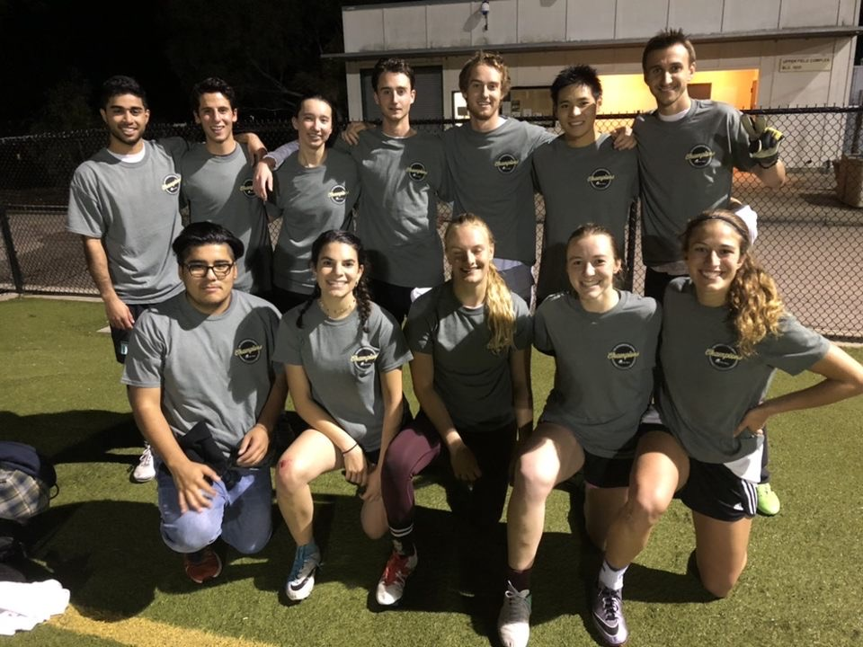
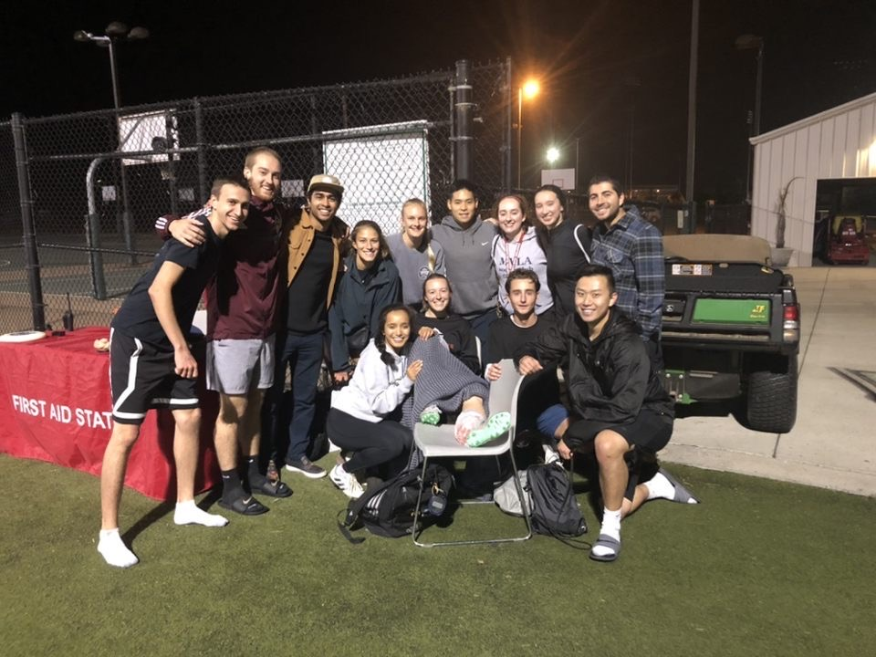
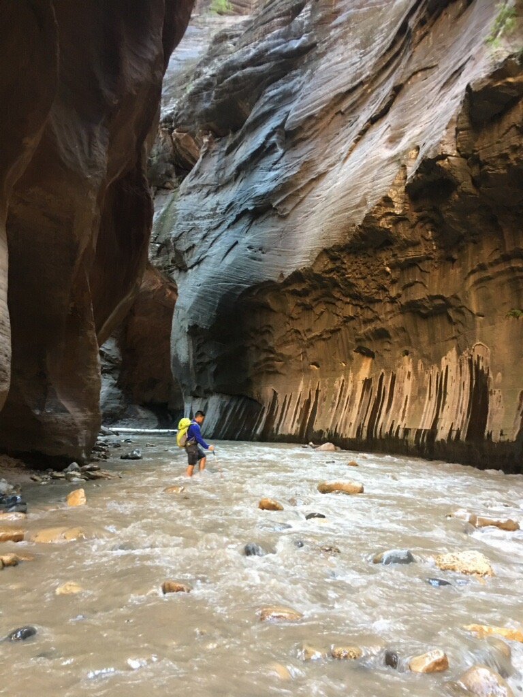

About Me
Personal
Hello my name is Raymond Akagi and I like...
Soccer
I enjoy playing soccer and Futsal. I have been playing since I was very young and continued through Highschool and college at recreational level. This Past Winter, my intramural D-1 Co-rec team won the I.M. championship!!


Hiking / Backpacking
I enjoy spending time in the outdoors whether thats at my local park or in the middle of the Sierras. There is nothing like the smell of fresh air and good company with no distractions.
Fitness
I enjoy exercising and pushing my body to a limit (within reason). By setting goals, working continuously to reach those goals, and seeing results is a rush that I will always strive for.


Food/Cooking
Food and making food are some of my guilty pleasures. When I'm not busy burning calories, I am busy eating them!